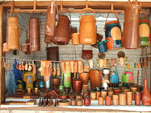

| Arte | Artesania | Diseño | Creatividad |
| Se busca hacer piezas u objetos únicos e irrepetibles, es un trabajo por lo general manual y que llega a tener un costo elevado si el artista vende su obra, por lo general sí. El artista plasma sus sentimientos y emociones como forma de expresión y su forma de comunicar experiencias, sucesos, etc. |
Diferencias entre Arte, Artesanía y Diseño |
Es muchas veces considerado un arte aplicado, aquí los objetos son producidos para escalas en masa y se ocupa tecnología avanzada, en comparación a las artesanías. Aquí, el diseñador NUNCA buscaría expresar SUS sentimientos o emociones, sino lo que su cliente necesite para los objetivos de comunicación que se le plantean. |
 |
| La artesanía como actividad material se diferencian del trabajo en serie o industrial. Para que una artesanía sea tal debe ser trabajada a mano y cuanto menos procesos industriales tenga, más artesanal va a ser | |
Pesar de ser un trabajo con la ayuda de poca tecnología, hace objetos distintos porque mucho del trabajo se hace de forma manual; es en muchas ocasiones un oficio que en las familias pasa de generación en generación y es una forma de sustento económico. No es arte porque se producen piezas en forma serializada, casi idénticas. |
Caracteristicas del Arte
- Es un lenguaje
- Es una Actividad
- Es dinamico
- Es subjetivo
- Es indedinible
- Es una manifestacion cultural
|
|
Caracteristicas de Diseño
- Ten un concepto
- Diseño y creatividad es comunicación, no decoración
- El buen diseño y creatividad es universal y atemporal
- El buen diseño y creatividad es versatil
- El buen diseño y creatividad es simple
- El buen diseño y creatividad es innovador
|
|
|
Clases virtuales |